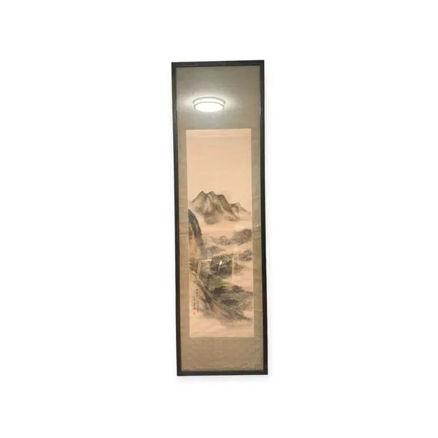
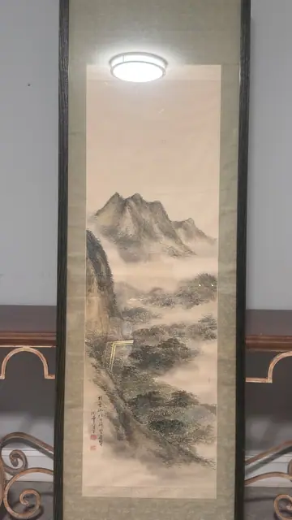
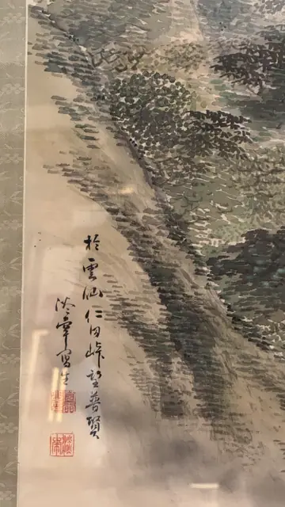

Paintings & Prints
Japanese Ink Landscape Scroll, Unzen Mountains, Signed, Framed
· mid to late 20th century
Price Upon Request



About the Item
A tall hanging scroll painted in ink and pale washes on paper: a jagged peak rises through banks of cloud at the top, while below it wooded ridges are built up from thousands of short green and black dabs. A tiny ochre gate or torii sits on the slope at the left, the only man-made note in the composition. The palette is restrained - lamp-black, sage and moss green, faint ochre - against warm cream paper, and the whole scroll is mounted on a pale grey-green silk brocade and set inside a tall dark wood frame under glass. Medium: ink and light colour on paper, mounted as a hanging scroll. Signed lower left of the painting, followed by two red seals. Inscribed on the reverse or mount: Brush inscription in two columns at lower left, partly legible: '於雲仙仁田峠 望普賢' (approximately 'At Unzen, Nita Pass, looking toward Fugen'); a shorter signature column to its left is not legible; Two square red seals below the inscription. Condition: Paper lightly toned with faint horizontal roll creases across the sky; a few small pale marks in the upper area; heavy ceiling-light glare on the glass in all photographs.
Details
- Creation Year:
- mid to late 20th century
- Dimensions:
- Height: 79.25 in (201.3 cm)
Width: 23.25 in (59.05 cm)
outside of frame - Medium:
- ink and light colour on paper, mounted as a hanging scroll
- Period:
- 20Th
- Condition:
- Offered in the condition shown in the photographs.
- Reference Number:
- VO-128
- Documentation:
- no certificate photographed
- Gallery Location:
- Brush inscription in two columns at lower left, partly legible: '於雲仙仁田峠 望普賢' (approximately 'At Unzen, Nita Pass, looking toward Fugen'); a shorter signature column to its left is not legible; Two square red seals below the inscription